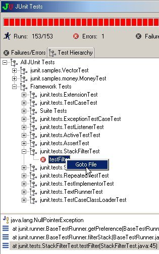
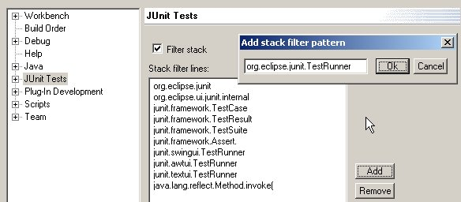
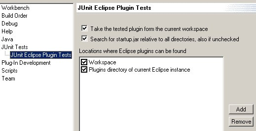

Eclipse JUnit
last updated October 12st
The Eclipse JUnit plugins allow you to run JUnit
tests inside of Eclipse. For more information about JUnit refer to www.junit.org.
The Eclipse JUnit support allows you to run:
-
Plain JUnit tests - tests that don't require
an Eclipse workbench to run.
-
Eclipse Core JUnit plugin tests - tests that
require an Eclipse workspace to run.
-
Eclipse UI JUnit plugin tests - tests that require an
Eclipse workbench to run.
Plugins
Eclipse JUnit support comes with the following plugins:
-
org.junit - contains the JUnit version 3.7. It is
needed for developing JUnit tests.
-
org.eclipse.junit - contains support for running plain
JUnit
tests from Eclipse. It contributes a launcher for running plain JUnit
tests and a View for viewing the results of a test run.
-
org.eclipse.core.junit - contains support for running
Eclipse Core JUnit tests. It contributes a launcher for running JUnit tests inside
of an Eclipse IPlatformRunnable.
-
org.eclipse.jdt.junit - contains support for running
Eclipse UI JUnit tests. It contributes a launcher for running JUnit tests inside
of an Eclipse workbench and provides utility classes for implementing tests.
Installing the JUnit Eclipse Support
-
unzip org.junit.zip
and org.eclipse.junit.zip to your
plugins directory.
-
if you intend to develop Eclipse UI JUnit tests then unzip org.eclipse.jdt.junit.zip
.
-
if you intend also to develop Eclipse Core JUnit tests then unzip also org.eclipse.core.junit.zip
-
restart Eclipse
Developing and Running Plain JUnit Tests
To develop JUnit tests you create a Java project
with the junit.jar as a library on its build class path.
-
Create a Java project
-
Open the project's build path property and add the
junit.jar contained in the org.junit plugin as an external JAR. If you
want to browse the JUnit source then attach the src.jar contained in the
org.junit.plugin to the junit.jar. Notice, to avoid absolute pathnames
on the buildpath you can reference the junit.jar relative to a class path
variable.
-
Implement a TestCase subclass with some tests and
build them.
Running plain JUnit tests requires the following
steps:
-
select a junit.framework.TestCase class or a Class with a
static method "Test suite()" in the Packages view.
-
execute Run>JUnit Tests
This runs the JUnit tests and shows you the results
in a JUnit results view. See the figure below.Important: The JUnit results view shows
up in the current perspective. Therefore turn-off the preference Preferences>Debug>"Show
Debug Perspective when a program is launched in Run mode". Otherwise the
perspective is changed to the Debug perspective when you run JUnit tests
and you don't see the JUnit results view.
The test results are shown in a JUnit test result view. You can select a
failed
test or stack frame and execute Go To File to open the corresponding
source file in an editor in the workbench. There is also a context menu in the
failures and hierarchy tab that allows you to rerun a Test class..
To track down problems you can run the JUnit tests in the debugger by
executing Debug>JUnit Tests
.
Developing and Running JUnit Eclipse Tests
To run JUnit tests for Eclipse plugins you have to execute Run>JUnit UI Eclipse Plugin Tests
or Run>JUnit Core Plugin Tests. Notice, that you can not run ordinary JUnit
tests using this launchers.
The Eclipse UI JUnit test launcher creates a TestWorkench. This is
a subclass of the Workench which will open, run a set of tests, and then
close itself automatically. Cause the tests are executed on top of an Eclipse
Workbench, you are allowed to instantiate views and perspetives and you can also
use other plugins through the plugin classloader of the tested plugin.
The Eclipse Core JUnit test launcher creates a simple IPlatformRunnable. In
the runnable 's run method the tests will execute, and then the runnable
finishs. So can use the plugin classloader of the tested plugin and you can
instantiate other plugins, depending on your requirements specified in the
plugin 's "plugin.xml" file.
Running JUnit Eclipse Tests from the Console
First: arguments are not case sensitive.
You can also run Eclipse UI Tests outside of Eclipse from the console. To
do so you type in the following command in the Eclipse install directory.
java -cp startup.jar org.eclipse.core.launcher.UIMain -application
org.eclipse.jdt.junit.testapplication -testPluginName org.eclipse.ui.tests
-className
org.eclipse.ui.tests.api.ApiTestSuite
And for Eclipse Core Tests type in the following command in the Eclipse install directory.
java -cp startup.jar org.eclipse.core.launcher.UIMain -application
org.eclipse.core.junit.testapplication -testPluginName org.eclipse.core.tests.harness
-className
org.eclipse.core.tests.harness.ExampleWorkSpaceTest
In addition to the arguments provided by UIMain you must also pass the following
arguments:
-
testPluginName - the name of the plugin that contains the tests.
-
className - the name of your test suite class. This can either be a subclass
of TestSuite, TestCase, TestDecorator or a class with a static suite() method.
And there are arguments that you can provide:
- testListeners - you can provide a list of listeners. This listeners have
to be implementations of junit.framework.TestListener or/and
org.eclipse.jdt.junit.internal.ITestRunListener. This listeners have to be
known by your testplugin 's classloader - you have to provide a library or
require them if they are located in a different plugin. If the listeners are
not of type TestListener or ITestRunListener the run will fail.
If there is no argument testListeners then
org.eclipse.jdt.internal.TextTestListener is use, means console output known
from junit.textui.TestRunner.
- debugging - standalone argument. Causes the TestRunner to produce debug
output. This is especially ClassLoader (ClassCastExceptions,
InstantiationException ....) output and connection output (Socket, Writer
errors ....).
-
Property Pages
- In the global JUnit Test property page you can define the filter for the
stacktrace, which you will see in the FailureView.

- In the property page for the JUnit Eclipse Tests you can specify in which
directories your plugins can be found. If you are selfhosting use only
'Workspace'.

There are known limitations with dialog and it 's settings:
- you can uncheck all checkboxes -> will fail for sure ;-(
- startup.jar is needed by the plugin for launching the testapplication. If
a 'startup.jar' is included in the project of the testplugin then it will be
taken, else a startup.jar is searched relativ to all specified directories
containing plugins from top - down in the list. Take the tested plugin from
the workspace will ensure that the testplugin is taken from the workspace.
- you can configure the launch so, that your test plugin and the used
plugins are not in the workspace and therefore the stacktrace has not to be
related with the source in the workspace, but I provide this as a feature.
Send Comments and PRs to Erich Gamma .